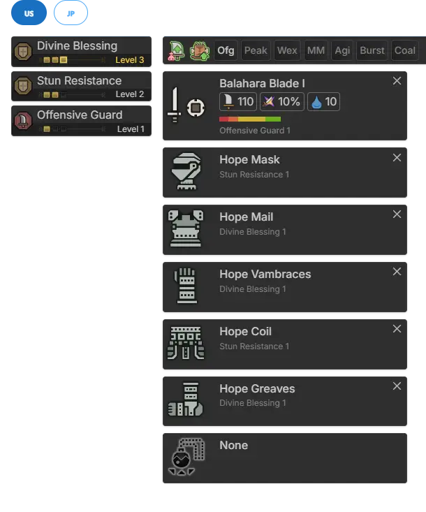
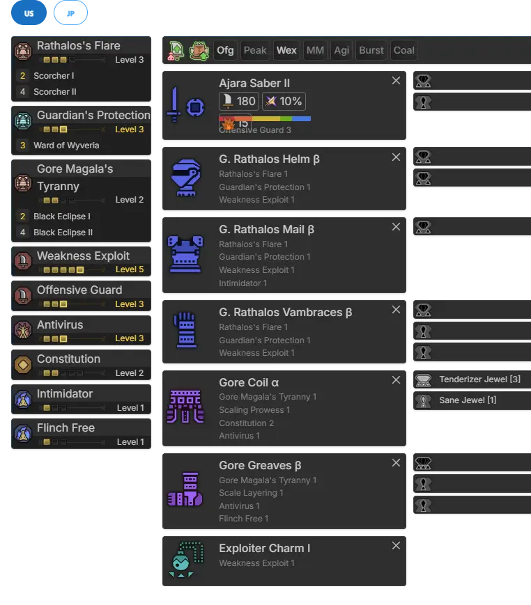
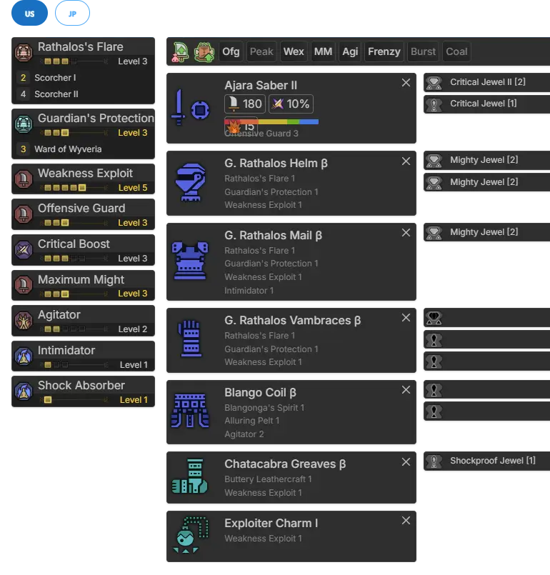

Progression builds are best used by players who:
- Are new to the franchise and need to find something effective and comfortable to learn with.
- Are overwhelmed by the large number of choices the game gives you starting out.
- Find themselves struggling in a new encounter
- Feel like their hunt times have reached the point of being intolerably long.
- People who just want pointers!
You should not go out of your way to farm every set in this document unless you feel that you fall into these categories. Learning to stretch out a set of armor until you are able to go no further with your level of skill can be a healthy practice. It both helps you gauge your own limits and can give you insight to where you are struggling by magnifying some of your mistakes. However, not everyone is up for that sort of thing, and that’s okay! These sets will still leave you in a great spot as you learn the game and transition from early game to endgame.
Progression in MHWilds story is relatively a breeze due to no armor variations or any skills to put on at all.
Starting out is going to be quite simple - stick with the Hope set and the Balahara SnS. At the same time, you should also make a Bone tree SnS which will eventually be upgraded to Arajakan for future use in High-Rank Story. We do not use the LR Bone tree SnS or Ajarakan SnS as the Balahara Blade is stronger in general at LR.

Open image in new tab
It’s your best armor until Chapter 2!
The next set is the full set Hirabami. Hirabami is a free kill as a group as they crowd around you. easily giving you a full set of Hirabami gear for better defense. Upgrade your Balahara Blade when you can as well. Get your Arajakan SnS ready for HR too. We do not use the LR Bone tree SnS or Ajarakan SnS as the Balahara Blade is stronger in general at LR.
Chapter 3 brings Guardians, and with it some decent armor at last. Weakness Exploit gives us ample amounts of critical chance while Burst gives us more consistent damage. This will last us until the end of the story and into High Rank. Upgrade your Arajakan SnS for HR. We do not use the LR Bone tree SnS or Ajarakan SnS as the Balahara Blade is stronger in general at LR. Open image in new tab
Open image in new tab
Since the goal is to get you, the player, to endgame as smoothly as possible, these sets will not require any decorations. Assume that you should slot in anything that gives you affinity on your armor, like Maximum Might, and Crit boost 3, Offensive guard 3 <- If you use other weapons, Razor Sharp 3. Use whatever you have on hand.
This set is basically just the HR version of the Chapter 3 set. More WEX and ample decoration slots.
This set makes the assumption that you have one Antivirus jewel, but this set is worth it even without it.

Open image in new tab
Also getting Gore Beta Helmet and Chest + arms as well. That used for 4P Gore endgame sets.
At this point, you should transition from the Balahara SnS to the Ajarakan SnS.

Open image in new tab
Gore 2pc + Antivirus 2 provides a whopping 21% affinity all on its own. If you’re lucky enough to get Max Might, Weakness Exploit, Burst, or Adrenaline rush decorations, be sure to slot them!
Well now
No, Don’t ask me why the retired 4P Gore TU0 meta set is doing here. Well it's here due to the fact that we gotta need something before HR51+ and clearly we need something to compensate for the lack of damage & defense.
All of these decos are common enough through endgame fights. just focus on getting 1 burst, 2 WEX and finally 3 max might first. the antivirus 1 can come last assuming you still didnt get one til now. The flayer is there as a really minor damage boost assuming you had one.